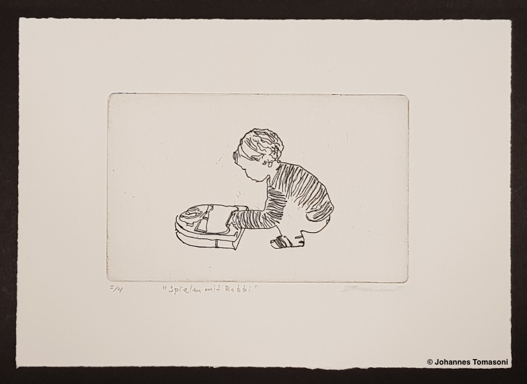
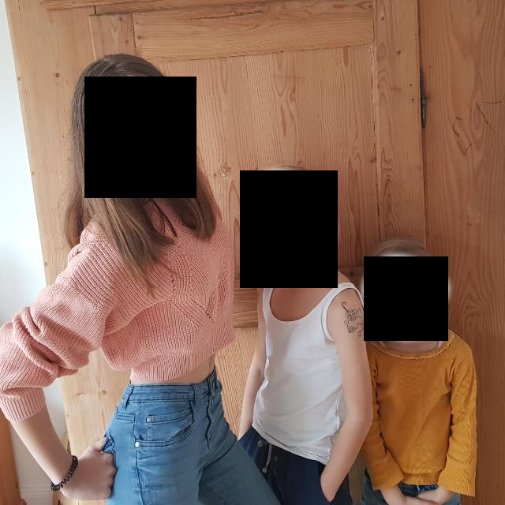
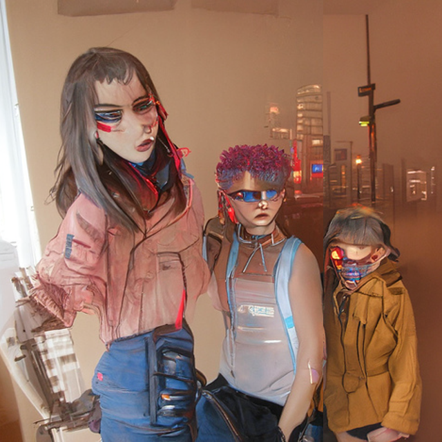
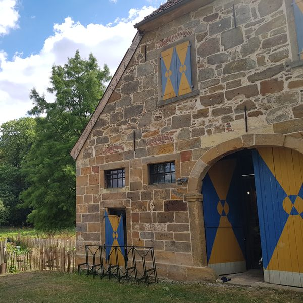
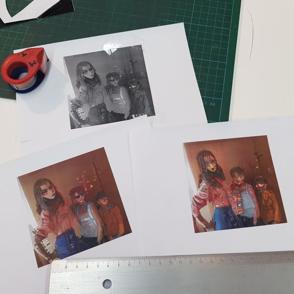
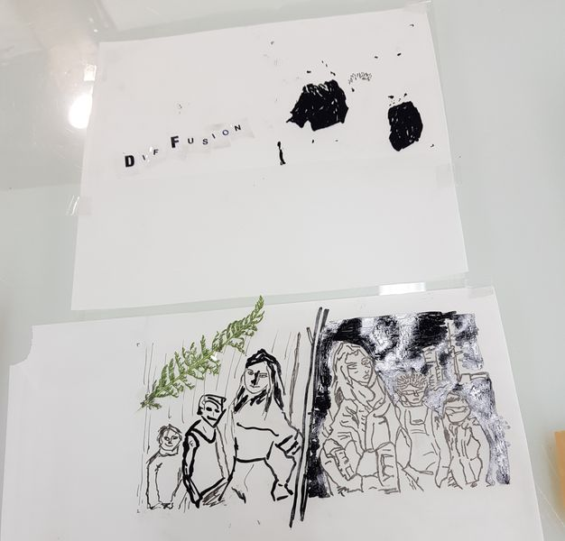
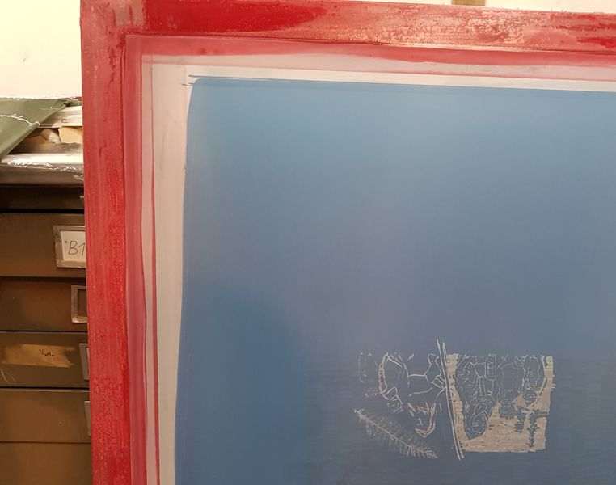
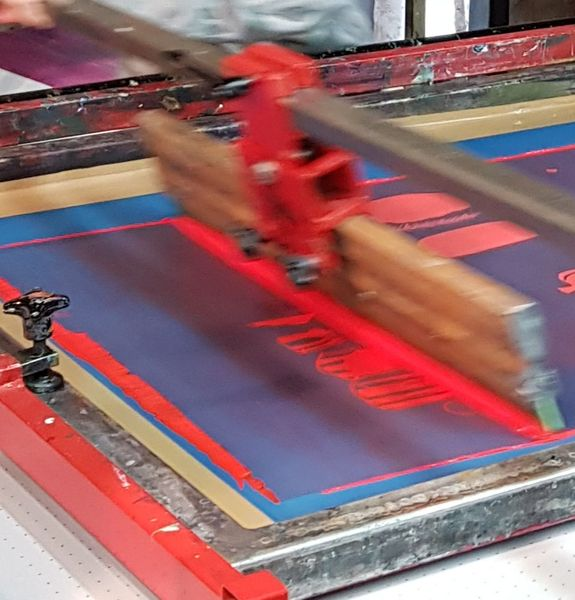
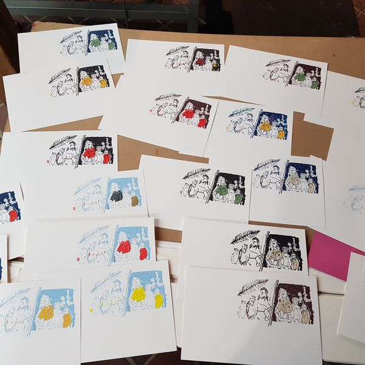
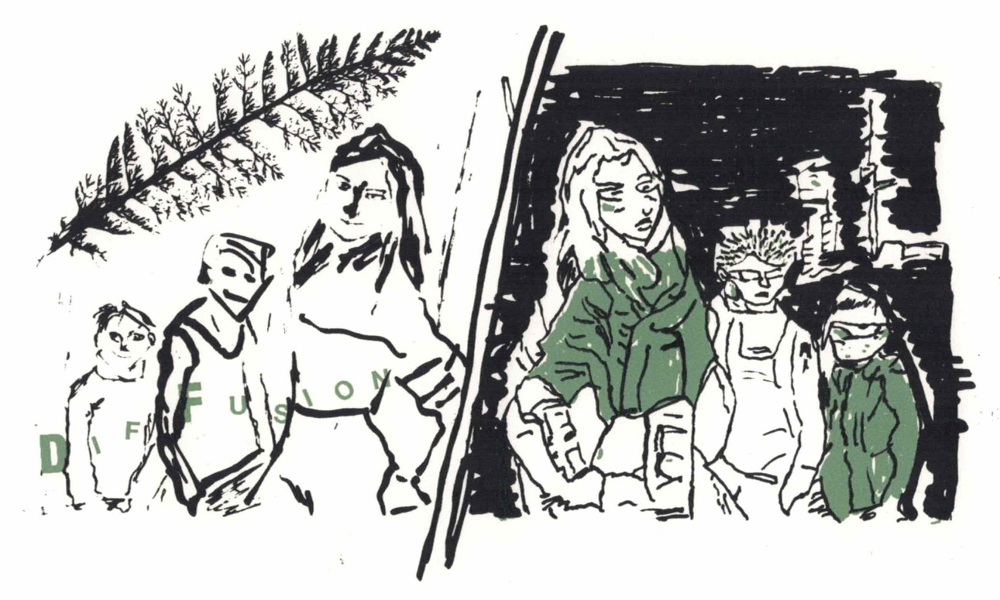

Human-machine interaction
In summer 2016 I spent a day with my brother at his studio in the Monastery of Bentlage to try out fine art printing. The monastery is in the countryside and is a very calming place to escape from everyday life. As preparation for the workshop my brother asked me to prepare a drawing. I’m not a good drawer, my hands are shaky and whatever comes out of the pencil never looks like what I intended to draw. Luckily I was experimenting with edge-detecting algorithms at that time. The algorithm I was implementing was suitable to create an image that looked like a drawing. I took a picture of my son where he was playing with the vacuum robot and run my program to extract the contours of my son and the vacuum robot. The setting where I generate a drawing with an algorithm and the theme of my son playing with a robot was very appealing. In the workshop we used the generated drawing as template for my artwork. The printing technique we applied to create the artwork is called etching. The classical look and feel of this centuries old technique was a nice contrast to the rather modern theme - a kid playing with a smart robot. Yet, it made the interaction between humans and robots look pretty normal. And I was proud of my amateurish accomplishments.

A few weeks later I was attending a TEDx event in Münster. One of the talks was given by the artist Roman Lipski and the art collective YQP. Surprisingly, they introduced their concept of art where the artist interacts with an Artificial Muse. The Muse (an ML algorithm) learned to imitate Lipski’s style of painting by “analysing” his artworks. The painter than used the generated images as inspiration (Muse) to paint new pictures on canvas. This was in 2016 shortly after google shared their Deep Dream accomplishments and Style Transfer was a hot topic in the tech community. Lipski and his team envisioned the natural interaction between AI and humans to create art. In 2016 I was not practicing ML yet, nor was I heavily involved into art, apart from seeing my brother from time to time. But after this TEDx talk it was obvious that computer generated images will have a high impact on arts in the future. But will it be interruptive in the sense that artists become obsolete?
What is art? Or, why is art?
There are countless definitions and strong opinions about What is Art? and what not. Let’s ignore this question for now and rather focus on another question. Why does Art exists? As I said, I’m not an art professional, but a few answers are obvious to me.
Art exists because of,
- the human nature:
- people love to be creative,
- people love beauty,
- people use different forms to express feelings,
- people love stories and imagination
- political and sociological activities:
- people, who are suppressed, can hide critics in art,
- people use art to defame opponents,
- people can visualize opinions …
There certainly are many more categories and reasons why art exists. However, a few things stand out.
- Art is a highly influential medium to form opinions using the imaginary power of the viewer. To the point where the viewer’s imagination can go way beyond the obvious object. For example, if you look at a picture with a house in a landscape and the rich and shiny oil colors, your imagination can take you from the museum right to Tuscany.
- People also practice art for their own sake.
So why do we get confused about the question What is art? Some of the techniques that are used in art are also used for other purpose. Let’s take drawing as an example. An architect uses drawing technics to plot the layout of a house. The plot may including information about wall measures, connection for water and electricity, etc. Usually you wouldn’t consider that kind of plot as a piece of art, though it still requires a bit of imagination from the viewer. The technical drawing must be easy accessible for the interpreter and thus provides the obvious information (e.g. measures of the wall in centimeters). However, sometimes a technical drawing can diffuses into art. although it still serves the original purpose. A technical drawing can be of such of an elegance that it my raise strong feelings in the viewer - or the drawer. Than it becomes art. Think of Christo’s drawings. Don’t you feel joy or fascination when you are looking at them?
Back to the question, will advancements in AI/ML disrupt and takeover Art? No! Every argument I used to describe the purpose of art involves humans at some point. There is no perception of beauty or expression of feelings without humans nor is there any political or social implications without humans. Will AI/ML heavily influence the arts and creativity? Yes! We will gain an impressive tool set and new techniques. And we can see that Computers are already being creative in certain environments (e.g. generative ML-models).
Diffusion
Computers are magical and support you being creative. I remember in the 90’s when we used to create flyers for our parties. The visual effects of the graphic programs were so fascinating that we had to use almost all of them. The flyers always ended up looking like invitations to psychedelic 70’s parties rather then to underground techno parties. Some 25 years later the algorithms are getting very sophisticated. Images can be created out of noise or text. Existing images can be transformed to adapt the style of another painter or to look totally different. At the time of writing this article Diffusion Models are trending. Their strength lies in modification of existing images by adding noise to the image and then transforming the image while reducing the added noise again. The models can be combined with text encoders. You can basically tell the algorithm how you want a given image to change and how you want it to look like.
This summer my brother called me because someone dropped out of a workshop he was offering. And if I wanted to join spontaneously. I signed up for the two day offside and because I missed the first day of the workshop I needed to come up with a good template quickly. I decided to use one of the publicly available Diffusion Models to get started. I picked Disco Diffusion, where a handy tutorial was available. I added one of my favorite photos of the kids to the model and as text input I asked the model to change the picture into something like “Three children waiting for a bus in a photorealistic cyberpunk town. Red, blue, black, dark cyberpunk scheme.”. I did a bit of parameter tuning and after two hours I had a few templates to work with on the workshop.
|  |  |
| Original photo (censored) | Combination of two generated images |
On this workshop we applied screen printing technique and due to time restrictions we were limited to two (color) layers. I used the original photo and the generated images as inspiration for the print. I wouldn’t call it Muse in my case because it used the images as template with a few abstractions. But if I’d be a professional artist I would definitely use the algorithms somehow.
|  |  |  |  |  |  |
For me as an amateur the fulfillment lays rather in the relaxing hours, escaping daily routines, interacting with people, while handcrafting some little artwork to use as Christmas card or to hang on my walls at home.

Resources
- Homepage Maximilian Tomasoni: http://www.maximilian-tomasoni.com/
- Homepage Monastery of Bentlage: https://www.kloster-bentlage.de/en/kunst-kultur-en/bentlage-print-society
- Edge-detecting algo for workshop in 2016: https://github.com/joatom/ART-playing-with-rob
- How Art Meets Artificial Intelligence, YQP and Roman Lipski, TEDxMünster, 2016. https://www.youtube.com/watch?v=oVE5rRJa0D8.
- “Inceptionism: Going Deeper into Neural Networks.” Accessed August 29, 2022. http://ai.googleblog.com/2015/06/inceptionism-going-deeper-into-neural.html.
- Gatys, Leon A., Alexander S. Ecker, and Matthias Bethge. “A Neural Algorithm of Artistic Style.” arXiv, September 2, 2015. https://doi.org/10.48550/arXiv.1508.06576.
- Ho, Jonathan, Ajay Jain, and Pieter Abbeel. “Denoising Diffusion Probabilistic Models.” arXiv, December 16, 2020. https://doi.org/10.48550/arXiv.2006.11239.
- Rombach, Robin, Andreas Blattmann, Dominik Lorenz, Patrick Esser, and Björn Ommer. “High-Resolution Image Synthesis with Latent Diffusion Models.” arXiv, April 13, 2022. https://doi.org/10.48550/arXiv.2112.10752.
- Quick Start on Using AI to Render Images Using Disco Diffusion, 2022. https://www.youtube.com/watch?v=wIw59kAU6u8.
- https://github.com/alembics/disco-diffusion, and Katherine Crowson. “Disco Diffusion v5.61 - Now with Portrait_generator_v001,” n.d. https://colab.research.google.com/github/alembics/disco-diffusion/blob/main/Disco_Diffusion.ipynb.